01 / 设计理念LESS TO MANAGE. MORE TO LIVE.
空间不必填满。
生活可以完整。
一个人的居所，可以从自己的生活出发。
不必为了低频待客多留一间房，也不必用装饰证明生活的丰盛。睡得好、吃得方便、东西好找、地面好清洁，这些真实发生的事情，才值得优先安排。
这里的“安全”，是安静、私密、可控和低负担。它不承诺某种防御能力，而是让你回到一个熟悉、清净、无需勉强自己的地方。
01少做不想做的事。
喜欢外卖，就把加热、饮水与清理安排好。不喜欢打扫，就从布局开始为机器人留路。
02让归位比堆放更顺手。
物品靠近使用地点，常用的够得着，备用的藏起来。收纳不靠每天重新整理来维持。
03把舒适放在前面。
一张舒服的床、一个足够深的桌面、一处安心看电影的位置。极简的，是生活负担。
这是面向偏爱独居、外卖与低家务负担的一种生活提案。它不代表所有人的选择，也不要求你拥有一样的房子。
02 / 全屋布局EVERYDAY, CONNECTED.
先安排生活，
再划分房间。
以约 98.3㎡ 室内净地面概念方案为载体。休息与工作分区，家政靠近衣物循环，设备独立安放。重要的不是面积数字，而是每段路为什么存在。
布局图 / 柜号与下方收纳图一一对应，点图可放大。
从平面，找到镜头。
图上方作为示意北向，蓝色箭头表示观看方向；不是房屋实测朝向。点击编号跳到对应空间。
玄关、露台、设备与收纳照片是局部参考；不据此增加门洞或推断相邻房间。效果图仍有透视与细部误差，精确占位以本版统一平面和尺寸图为准。
03 / 空间体验A DAY, AT YOUR OWN PACE.
一天的日常，
都有舒服的位置。
以下为 AI 生成的概念效果图，表达材质、光线与使用氛围。柜体、家具与开口尺寸以图纸为准；图片不作为施工依据。
01 / 客厅
把时间，留给一部电影。
大屏、能窝进去的沙发、顺手拿到的水。放松不需要复杂的场景，也不需要填满每一面墙。
V01 客厅 · 从厨房侧朝露台看；左侧沙发，右侧电视。 对照平面 ↗
- 98 英寸电视
- 电视在图左侧墙，沙发在图右侧；效果图朝露台看，因此画面左右相反。以电视＋NAS 为核心。按最终电视尺寸、坐姿与现场距离试看，不把普通观影升级成家庭影院。
- 固定布艺沙发＋长贵妃榻
- 低靠背、深坐面与同高贵妃榻，随时可以把腿放上来。净躺区目标约 1850 × 1000mm，按 170cm 身高试躺，靠垫承托腰背。
- 清扫有明确边界
- 悬浮影音柜底部预留 180mm。沙发采用封闭落地底座，机器人沿外轮廓清扫；主要通路与贵妃榻前方保持畅通，边角人工补扫。
查看客厅柜体分层 ↗S01 / 随时都能躺下
像床一样舒展，也有舒服的倚靠。
固定式深座布艺沙发，靠窗一端连着长贵妃榻。坐垫保持同一高度，腿可以直接放上来；靠背和扶手降低，几只宽大的活动靠垫承托腰背，让整体轮廓更舒展。
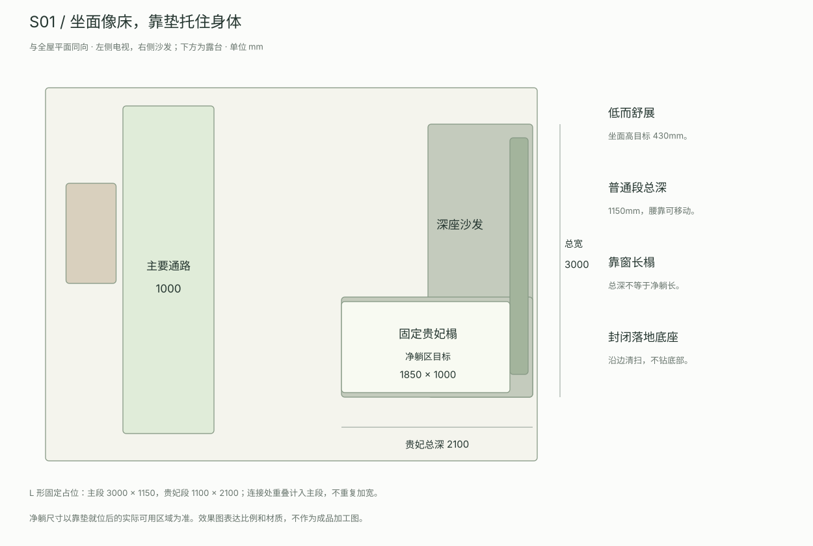
放大图纸 ↗- 坐与躺，都靠真实尺度
- 总宽目标约 3000mm，普通段总深 1150mm，贵妃段总深 2100mm、宽 1100mm。贵妃净躺区目标约 1850 × 1000mm，需扣除真实靠垫和侧边占位后复核。
- 柔软，也要能起身
- 坐面高目标约 430mm，扶手约 570mm，靠垫顶部约 800mm。以 170cm 身高试坐试躺；直坐时加腰靠，躺卧时移开小靠垫，避免坐面过深却托不住腰背。
- 少一些笨重的体块
- 浅灰米色布艺、平整厚垫、较低的扶手与背框，用少量大靠垫形成层次。坐垫不是越厚越好，软硬和回弹要试坐；面料优先核对耐磨、起球与局部清洁方式。
以上均为概念选型目标，效果图的透视不能用于量尺寸。贵妃榻与主沙发采用固定连接，坐面齐平，拼缝不夹脚、不易移位；能否拆洗按最终面料与成品结构确认。
T01 / 日常使用与清洁
躺卧面留给身体，杯子放在侧边。
- 贵妃榻保持完整
- 贵妃榻设在靠窗一端，前方保留露台方向的空间。硬质小边几放在近端扶手外侧，水杯和手机不压在软坐垫上。
- 餐桌按需移近
- 轻便硬质餐桌平时停在厨房 C06 右段，优先坐直用餐。需要移到普通座位前时，核对腿部空间和桌子稳定性；用完移回，不长期挡在贵妃榻前。
- 地面按固定轮廓清扫
- 底座采用落地、略内缩的封闭式做法，机器人沿外轮廓清扫，不钻沙发底。避免留下拖布和机器人都进不去的狭缝；接缝与侧边定期人工清洁。
本版平面按固定 L 形轮廓绘制：总宽 3000mm、贵妃总深 2100mm，主要通路预留约 1000mm；靠窗端至窗线约 1400mm，实际净空还须扣除窗帘等占位。
02 / 工作室
桌面很简单。背后很完整。
桌面只留下正在使用的设备。文件、配件、打印机和网络设备各有位置，工作开始时不用先整理半小时。
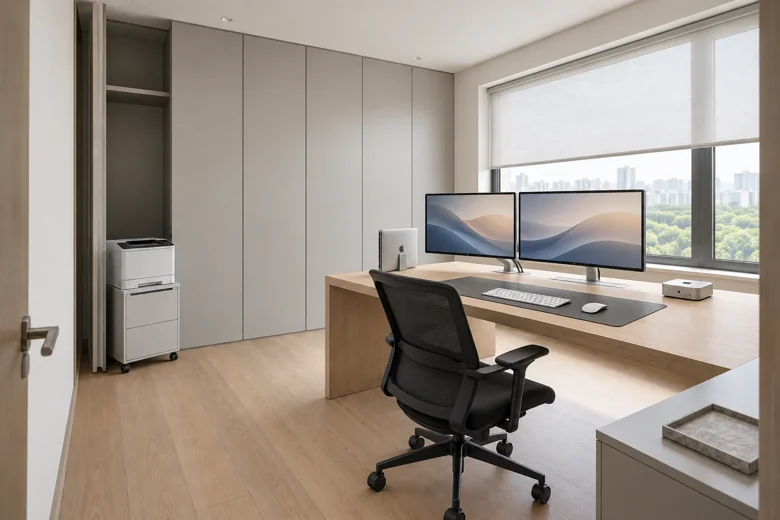
查看大图 ↗V02 工作室 · 从入口朝窗边看；左侧文件柜，右侧窗下工作台。 对照平面 ↗
- 1800 × 900 mm 工作台
- 两块显示器同向朝向座位；左侧为 MacBook 立式位，右后为 Mac mini。苹果键盘、鼠标放在桌垫上，主屏与键盘对齐。
- 原装充电，更容易替换
- 高频快充保留 AC 插座与原装充电器，不把不可升级的固定 USB 当作唯一方案。
- 打印机有自己的使用位置
- 放在可移出的独立小车上，使用时移到通风位置。进出纸、开盖、换耗材所需空间一起预留。
查看工作室柜体分层 ↗D10 / 桌面布置与使用
两台电脑，共用一个清楚的工作位置。
以 Mac mini 作为常驻主机，MacBook 放在左侧立式位，便于带走。两块显示器都朝向座位；主屏和键盘对齐，副屏略向内转，不需要扭着身体工作。
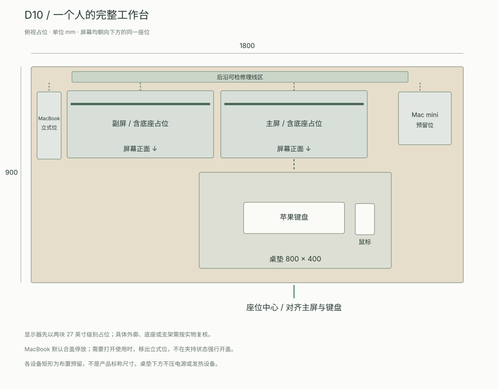
放大图纸 ↗- 桌面不是设备堆放区
- 桌垫按 800 × 400 mm 预留，苹果键盘与鼠标放在其上，鼠标右侧保留活动范围；前沿不放充电器和杂物。
- 两台电脑，不假定自动切换
- 日常先让 Mac mini 驱动双屏。MacBook 接入时，按实际机型与显示器接口安排换线或兼容的切换设备；键鼠连接也单独确认。
- 线藏起来，也能取出来
- 供电和视频线沿后沿进入可打开的线槽，留合理余量。Mac mini 保持通风、接口可达；桌下不悬挂线团，不挤占膝腿空间。
双屏数量、分辨率、刷新率和合盖外接条件取决于实际 Mac 型号与连接方式，选型前核对 Apple 外接显示器说明。当前图示为桌面占位方案，不默认任何一根扩展坞线都能实现双屏和键鼠切换。
03 / 轻厨房
不爱做饭，也值得好好吃饭。
外卖是日常选择。厨房围绕冷藏、加热、简单夜宵与清洗展开，让一顿饭少几个麻烦的步骤。
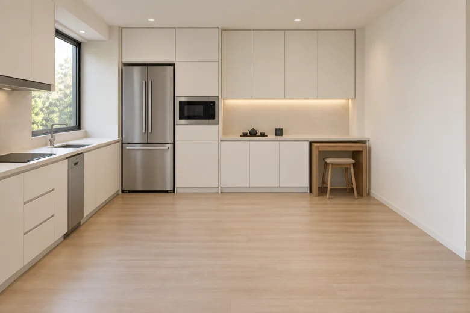
查看大图 ↗V03 轻厨房 · 从客厅朝里看；左侧操作台，正面设备与饮水柜。 对照平面 ↗
- 拆包 → 加热 → 用餐 → 清理
- 留一块完整的落物台，微波炉附近就能取到餐具，吃完顺路进入洗碗机或垃圾收集区。
- 把空间给高频设备
- 大冰箱、微波炉、洗碗机，以及满足煎蛋、泡面的简单灶具。制冰、净水与设备散热按机型安排。
- 柜门不能代替散热条件
- 微波炉开放运行或采用明确支持嵌入的型号；冰箱检修与散热间距不被装饰封板吃掉。
查看轻厨房柜体分层 ↗04 / 卧室
睡眠，应该足够柔软。
床、软靠背、遮光和安静。能随手放下手机，也能随时结束一天。没有为“主卧应该有”而增加的陈设。
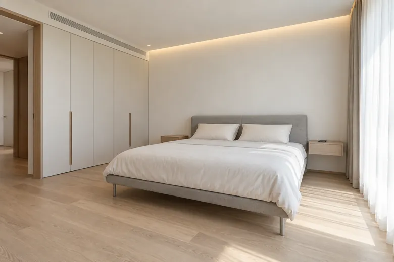
查看大图 ↗V04 卧室 · 从床尾斜看床头；左侧衣柜，右侧外窗。 对照平面 ↗
- 1800 × 2000 mm 床垫
- 作为本方案假设。软硬以实际试睡为准，床架和靠背外廓另计，不把床垫尺寸当作家具总尺寸。
- 降低夜间干扰
- 网络和存储设备放在独立区域，遮光同时考虑窗帘漏光边缘；床边照明可独立关闭。
- 穿一天、洗一次的衣物循环
- 常穿、待洗、已洗待归位分开。高频衣物处在容易取到的位置，顶部存放换季用品。
查看卧室柜体分层 ↗05 / 卫浴
开阔，是每天都能感受到的。
洗漱、马桶与浴缸共享开阔空间，仅将淋浴隔开。少一道隔断，少一点拥挤；该隔开的水汽仍然认真处理。
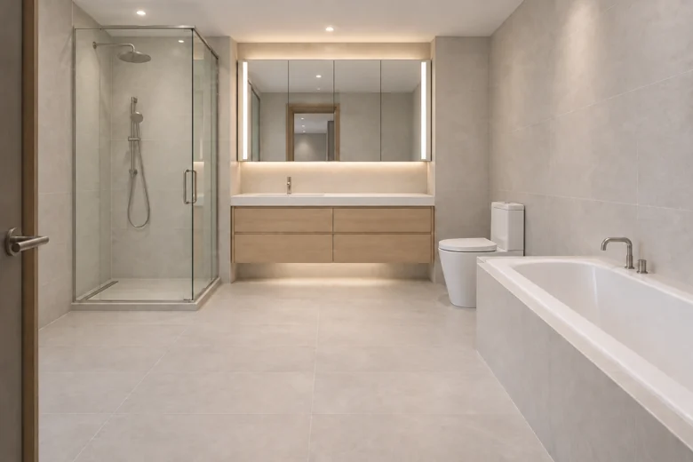
查看大图 ↗V05 卫浴 · 从入口看洗漱台；左侧淋浴，右侧马桶与浴缸。 对照平面 ↗
- 1200 × 1200 mm 淋浴区
- 独立隔水；玻璃、挡水与地面找坡一起设计。效果图的通透感不能替代可靠排水。
- 1600 mm 洗漱台
- 常用护理品收在镜后，台面留给正在使用的物品。抽屉需绕开排水管，检修口必须能打开。
- 1700 × 800 mm 浴缸外廓
- 以 170 cm 身高作为本方案参考，舒适度仍要看内腔、靠背角度和跨入高度，选购前试坐。
查看卫浴柜体分层 ↗06 / 家政区
穿过一次，洗护一次。
独立洗衣机和热泵烘干机，让洗护成为一条短而稳定的流程。机器人有自己的家，但出门不需要你开柜门。
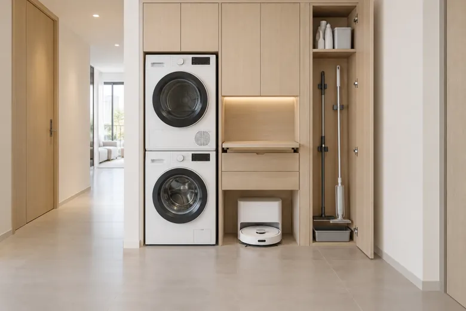
查看大图 ↗V06 家政 · 正看 C08；左洗烘、中基站、右工具。 对照平面 ↗
- 脏衣 → 洗烘 → 归位
- 脏衣篮可移出，洗涤剂就近存放，折衣和暂放区与脏衣区分开，减少反复搬运。
- 洗烘叠放先核对兼容性
- 使用合适的叠放件；上方滤网、下方排水与电源都能维护，振动和检修不能只靠一张效果图判断。
- R01 常开通道
- 基站开口名义宽 800、高 550 mm；前方以 1200 mm 净空为设计目标。按最终基站确认，尤其留意上盖和水箱操作。
查看家政区柜体分层 ↗04 / 收纳系统A PLACE FOR WHAT YOU USE.
收起来之前，
先想想怎么拿。
让高频动作更短，让低频物品更安静。每一组柜体都说明放什么、怎么分层，以及使用时需要留出的空间。
就近东西跟着使用地点走。
浅放常用小物尽量一眼看全。
留余为未来变化保留弹性。
柜体图册
展开查看内部结构。尺寸顺序为宽 × 高 × 深，单位 mm。所有柜号与布局图对应；其中 C05A 是厨房设备柜，C07M 是镜柜。
C01玄关归位柜1800 × 2400 × 450 mm＋
出门与回家的动作，在同一处结束。
每日鞋位与随手放置台靠近入口；背包就近归位。快递开箱工具集中存放，包装及时清走，顶部只放低频用品。
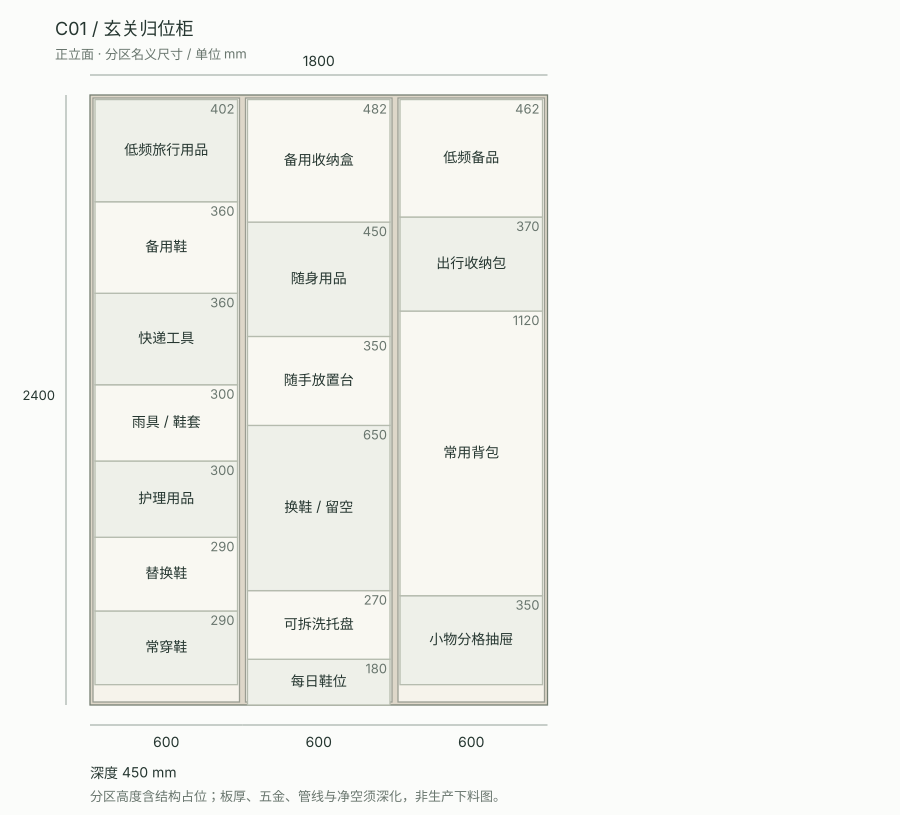
放大图纸 ↗- 第1段 · 600 mm低频旅行用品、备用鞋、快递工具、雨具 / 鞋套、护理用品、替换鞋、常穿鞋
- 第2段 · 600 mm备用收纳盒、随身用品、随手放置台、换鞋 / 留空、可拆洗托盘、每日鞋位
- 第3段 · 600 mm低频备品、出行收纳包、常用背包、小物分格抽屉
C02悬浮影音柜2400 × 480 × 400 mm＋
服务观影，也服务清扫。
遥控器、手柄和播放器分区。运行设备的散热与线材检修保持可达；底部 180 mm 离地仅为柜体方案，不代表所有扫地机都适配。
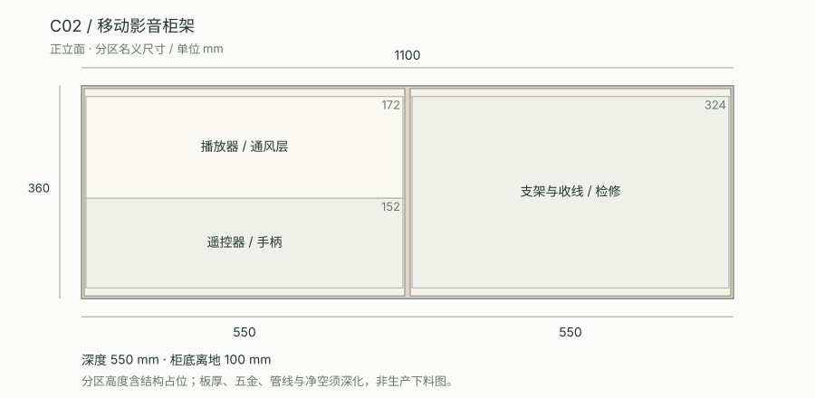
放大图纸 ↗- 第1段 · 600 mm播放器 / 通风位、遥控器 / 手柄
- 第2段 · 600 mm原装充电器、影音附件
- 第3段 · 600 mm当前常用物、纸巾补充
- 第4段 · 600 mm备用线材、空余弹性格
C03工作室归档柜3000 × 2400 × 650 mm＋
先按任务分类，再按物品分类。
待处理、近期文件、长期归档分开。数码配件采用浅抽，重要原件上锁；打印机移出使用，不在封闭柜里运行。
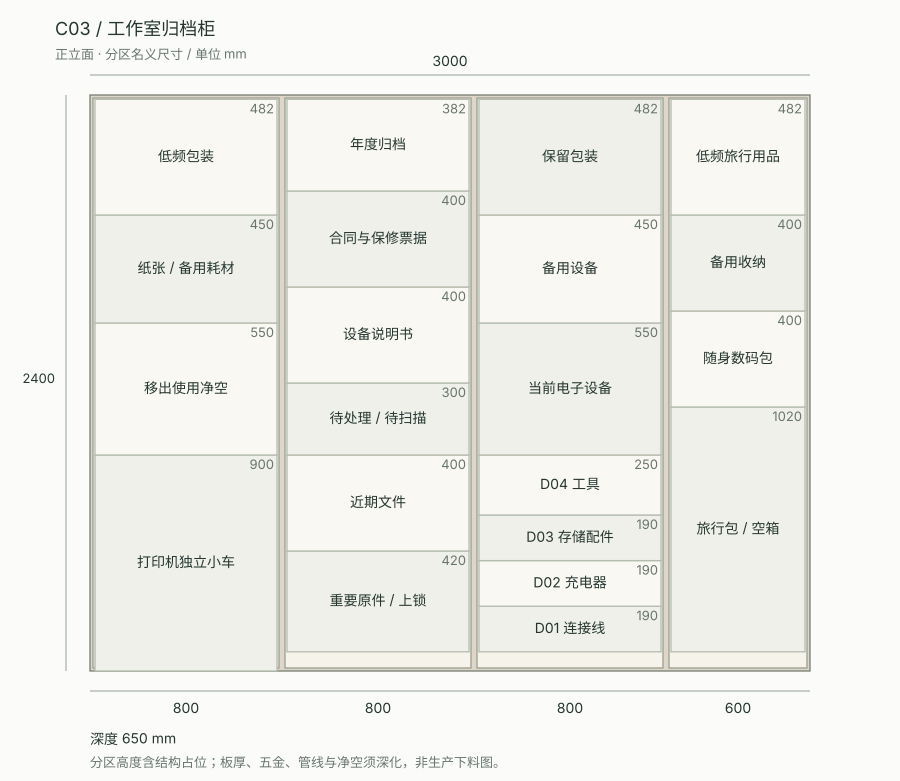
放大图纸 ↗- 第1段 · 800 mm低频包装、纸张 / 备用耗材、移出使用净空、打印机独立小车
- 第2段 · 800 mm年度归档、合同与保修票据、设备说明书、待处理 / 待扫描、近期文件、重要原件 / 上锁
- 第3段 · 800 mm保留包装、备用设备、当前电子设备、D04 工具、D03 存储配件、D02 充电器、D01 连接线
- 第4段 · 600 mm低频旅行用品、备用收纳、随身数码包、旅行包 / 空箱
C04卧室衣物柜2800 × 2400 × 600 mm＋
常穿近手，换季上移。
四段各 700 mm：长挂、双层短挂、折叠浅抽、旅行弹性位。挂衣净高、衣架深度和柜门开启需结合实物复核。
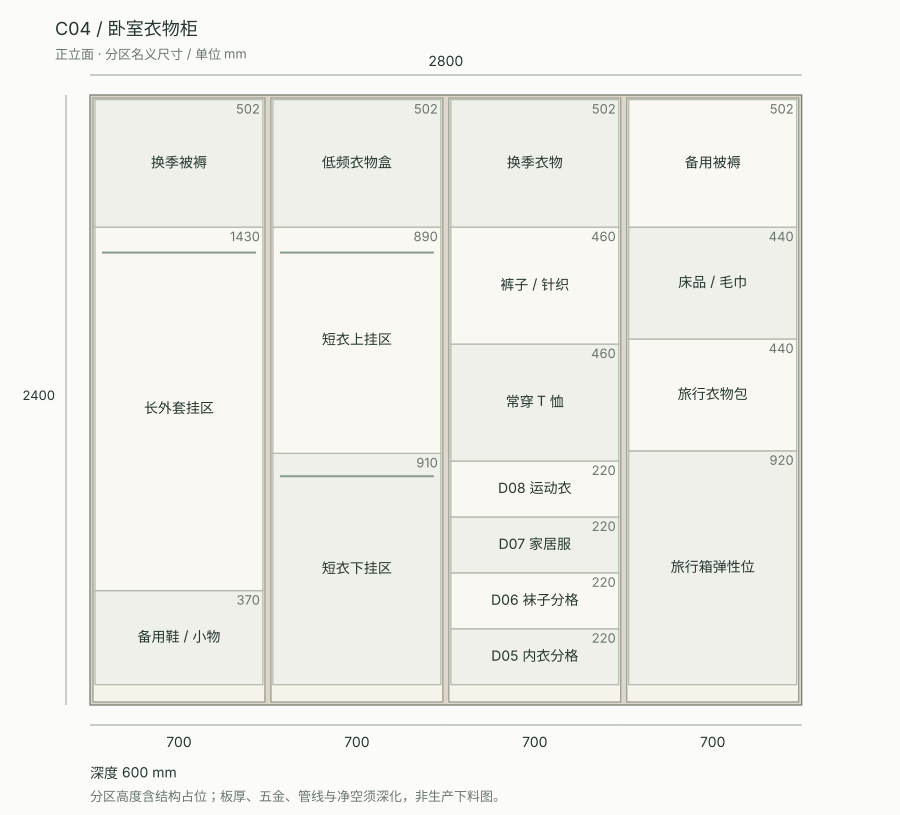
放大图纸 ↗- 第1段 · 700 mm换季被褥、长外套挂区、备用鞋 / 小物
- 第2段 · 700 mm低频衣物盒、短衣上挂区、短衣下挂区
- 第3段 · 700 mm换季衣物、裤子 / 针织、常穿 T 恤、D08 运动衣、D07 家居服、D06 袜子分格、D05 内衣分格
- 第4段 · 700 mm备用被褥、床品 / 毛巾、旅行衣物包、旅行箱弹性位
C05轻厨房操作柜2800 × 900 × 650 mm＋
常用的餐具与夜宵，少走一步。
水槽、垃圾桶和洗碗机集中；餐具用浅抽、锅具用深抽。下水、净水和洗碗机管线占位后再核算真实净容量。
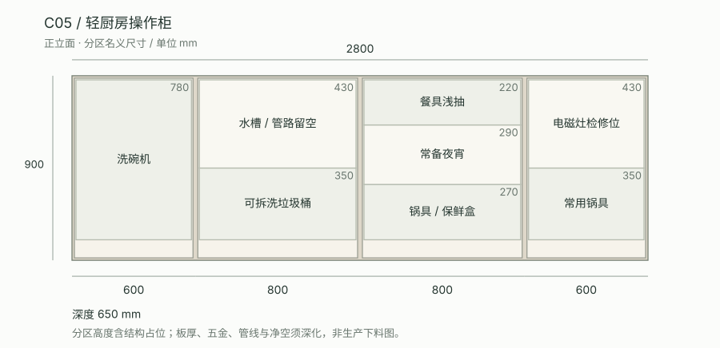
放大图纸 ↗- 第1段 · 600 mm洗碗机
- 第2段 · 800 mm水槽 / 管路留空、可拆洗垃圾桶
- 第3段 · 800 mm餐具浅抽、常备夜宵、锅具 / 保鲜盒
- 第4段 · 600 mm电磁灶检修位、常用锅具
C05A冰箱与微波设备柜1500 × 2400 × 750 mm＋
先选设备，再定最终开口。
冰箱与微波炉分区，保留取放、散热与检修空间。图中尺寸为概念占位，不可作为任何具体型号的安装尺寸。
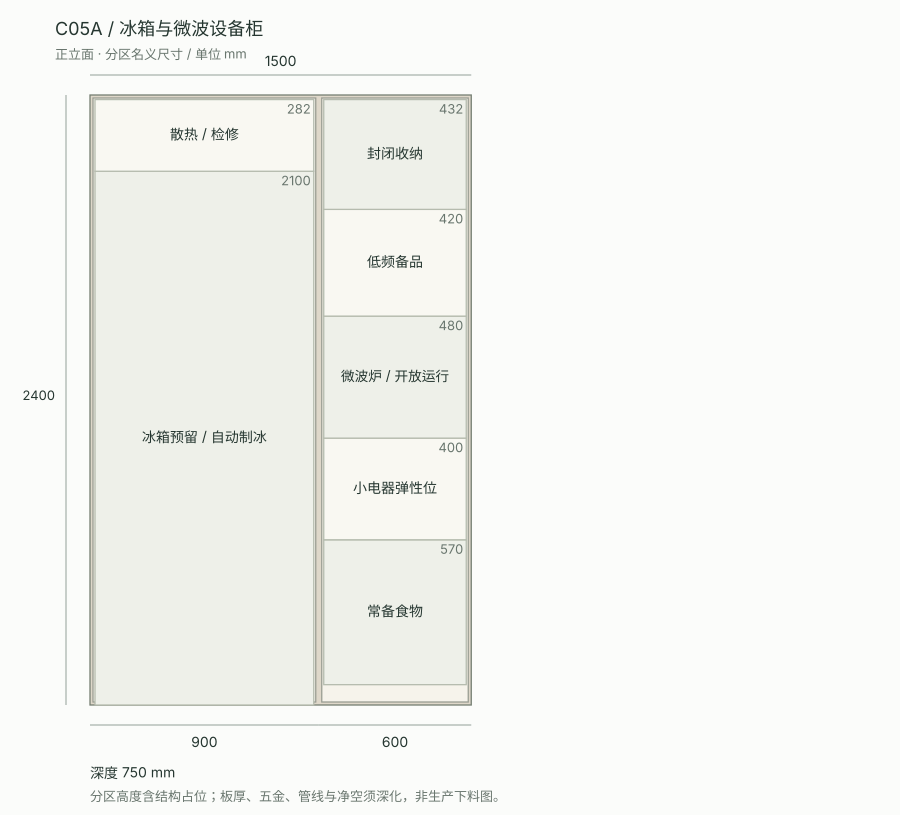
放大图纸 ↗- 第1段 · 900 mm散热 / 检修、冰箱预留 / 自动制冰
- 第2段 · 600 mm封闭收纳、低频备品、微波炉 / 开放运行、小电器弹性位、常备食物
C06饮水与茶具柜2100 × 2400 × 600 mm＋
接水与泡茶，一次准备好。
水杯、茶具和茶叶就近放置；净水阀门独立检修。右段改为 700mm 名义宽开放位，净宽扣除板厚后核对餐桌与凳子；不再作为满格备品柜。接水台做好接滴与清洁，避免水路经过难以维护的封闭空间。
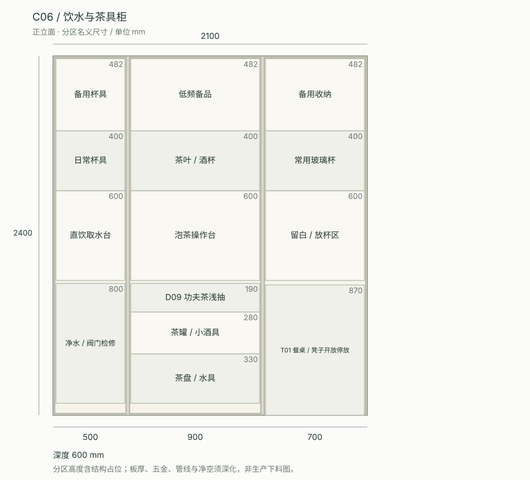
放大图纸 ↗- 第1段 · 500 mm备用杯具、日常杯具、直饮取水台、净水 / 阀门检修
- 第2段 · 900 mm低频备品、茶叶 / 酒杯、泡茶操作台、D09 功夫茶浅抽、茶罐 / 小酒具、茶盘 / 水具
- 第3段 · 700 mm备用收纳、常用玻璃杯、留白 / 放杯区、T01 餐桌 / 凳子开放停放
C07悬浮洗漱柜1600 × 650 × 550 mm＋
让台面留下可以使用的空白。
毛巾和备品在下部，常用护理品在上部。台盆下抽屉绕管；原吹风机抽屉改为洗漱备品，吹风机移到 H01 挂放位。
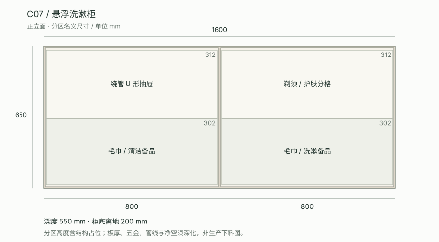
放大图纸 ↗- 第1段 · 800 mm绕管 U 形抽屉、毛巾 / 清洁备品
- 第2段 · 800 mm剃须 / 护肤分格、毛巾 / 洗漱备品
C07M镜面收纳柜1600 × 850 × 150 mm＋
镜后只收纳适合这个深度的物品。
深 150 mm 的镜柜优先存放护理用品；不用它硬塞吹风机。搁板净高、瓶身尺寸和镜门铰链的占位都要检查。
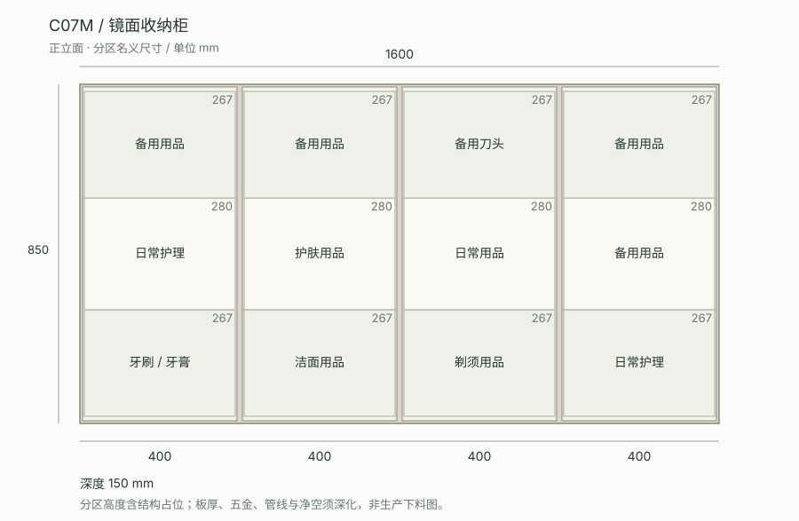
放大图纸 ↗- 第1段 · 400 mm备用用品、日常护理、牙刷 / 牙膏
- 第2段 · 400 mm备用用品、护肤用品、洁面用品
- 第3段 · 400 mm备用刀头、日常用品、剃须用品
- 第4段 · 400 mm备用用品、备用用品、日常护理
C08洗护与机器人柜2200 × 2400 × 750 mm＋
清洁设备藏起来，使用入口露出来。
洗烘 800＋基站 800＋工具 600 mm 三段。基站地面齐平；柜门、踢脚、管线不可阻挡机器人。实际净宽会扣除板厚。
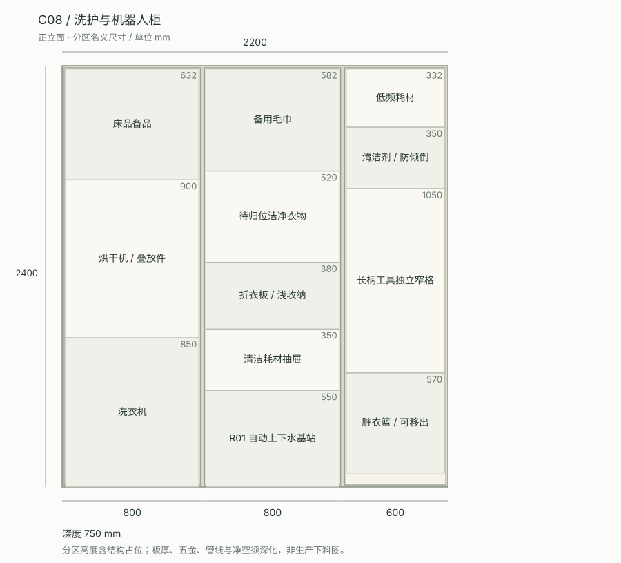
放大图纸 ↗- 第1段 · 800 mm床品备品、烘干机 / 叠放件、洗衣机
- 第2段 · 800 mm备用毛巾、待归位洁净衣物、折衣板 / 浅收纳、清洁耗材抽屉、R01 自动上下水基站
- 第3段 · 600 mm低频耗材、清洁剂 / 防倾倒、长柄工具独立窄格、脏衣篮 / 可移出
C09网络设备架1200 × 2000 × 600 mm＋
运行安静，也能随时检修。
网络与 NAS 分区供电。UPS 优先保网并支持 NAS 安全关机；散热、噪声、线材弯曲和维护净空均需按设备核对。
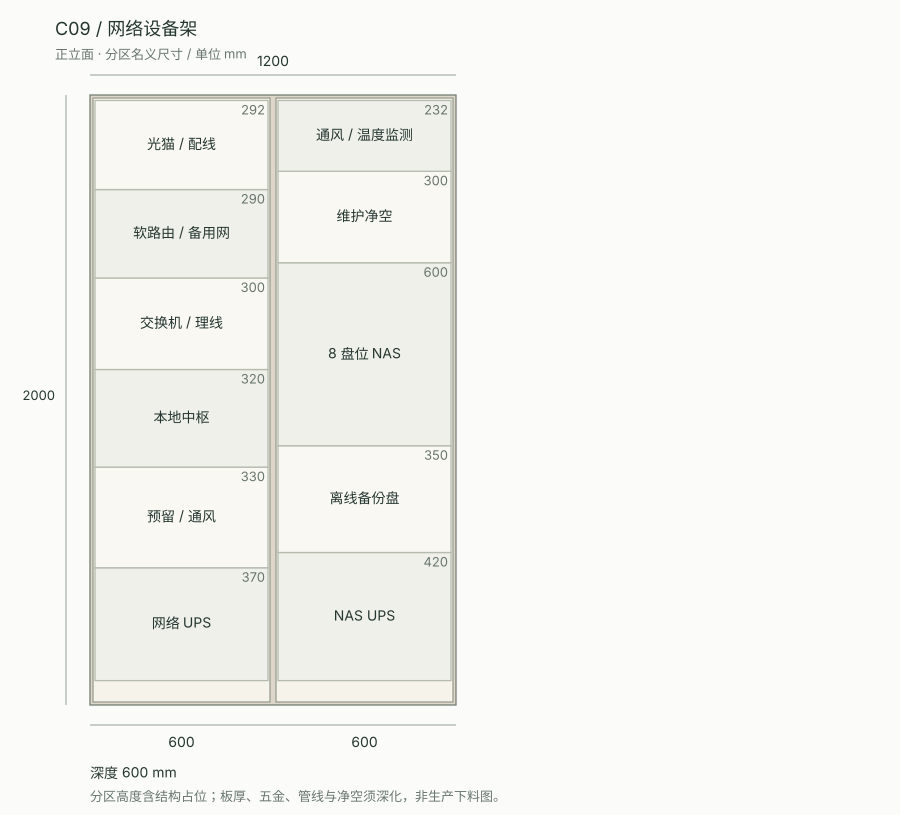
放大图纸 ↗- 第1段 · 600 mm光猫 / 配线、软路由 / 备用网、交换机 / 理线、本地中枢、预留 / 通风、网络 UPS
- 第2段 · 600 mm通风 / 温度监测、维护净空、8 盘位 NAS、离线备份盘、NAS UPS
DRAWER DETAILS / 抽屉的内部
打开以后，
也不需要翻找。
数码配件 / 按用途分
短线、充电器、读卡器与长线分开。正在使用的线材留在设备处，抽屉只接纳备用和待取用物品。
贴身衣物 / 一眼找得到
前后两排、三列分格。按个人衣物数量调整，不为追求填满每一格而增加物品。
功夫茶具 / 一次取齐
杯、盖碗、茶罐、茶巾分区。按常用茶具实际外廓复核，使用后清洁并干燥，再放回抽屉。
H01 / 使用动作的修正
吹风机和它的线，
本来就是一件东西。
固定的是位置，不是机身。干区侧柜内设置挂架，取下即可使用；机身、线缆和常用风嘴在同一个区域归位。
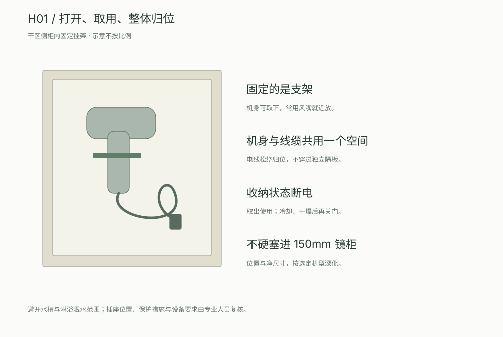
放大图纸 ↗收纳不增加拆分动作。电线不经过狭窄的独立隔格，也不拉紧缠绕。柜门不会夹住线材。
隐藏不等于封死。使用时取出，归位时断电并等待冷却、干燥。不采用在密闭柜内持续通电的方式。
按实物深化。H01 是新增挂放概念，最终位置与净尺寸待机型确定；不沿用原镜柜 150 mm 深度。
05 / 墙脚与收边LESS VISIBLE. STILL PROTECTED.
墙脚安静，
拖地省心。
不想要厚重的传统踢脚线，也不想为隐藏做法开槽、找平和反复补漆。这个方案保留必要的墙脚保护，用低矮、同墙色的平直明装款降低存在感。
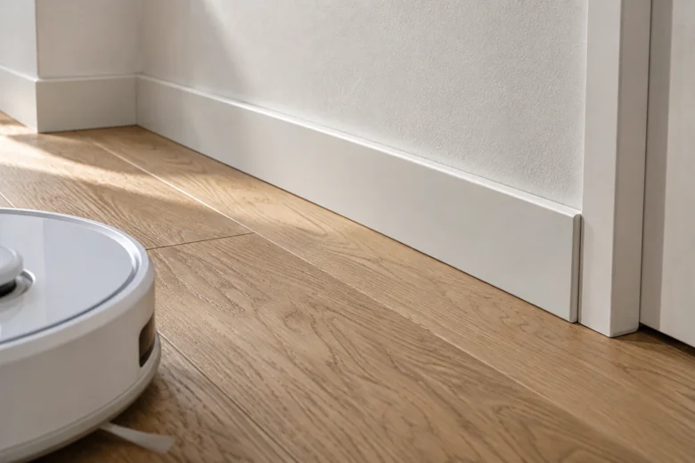
查看大图 ↗B01 / 本方案的参考方向
约 60mm 高，颜色接近墙面。
先找现货哑光铝合金平直款，看样板、看配套转角和端帽。固定在完成的墙面上，省去隐藏式收边的开槽和墙面重做工序。预算紧时也可比较成品防潮平直款；材料、配件与人工一起报价，不默认金属一定最便宜。
- 少一点存在感
- 降低高度、接近墙色、简化外形，比一味追求“极薄”更可靠。选成品涂层，现场打样看色差与擦洗表现，不把普通墙漆直接当作金属面漆。
- 保留实际保护
- 拖布和机器人沿墙清洁时，先接触易擦拭的收边表面。它能减少墙脚直接受污，但不等于全墙防水，也不免除转角和上沿的擦拭。
- 先确定地面，再定截面
- 木地板、SPC 或其他浮铺地材可能需要周边伸缩空间。踢脚线的覆盖宽度按具体地板要求选择，不为了藏线感把地板顶死在墙上。
厚度不能只看外观。
这张剖面用“缝宽 10mm、外凸 15mm”说明遮盖关系，数字只是示例。实际缝宽、墙面偏差和伸缩量由地板系统确定；太薄盖不住时，应换足够覆盖的截面。
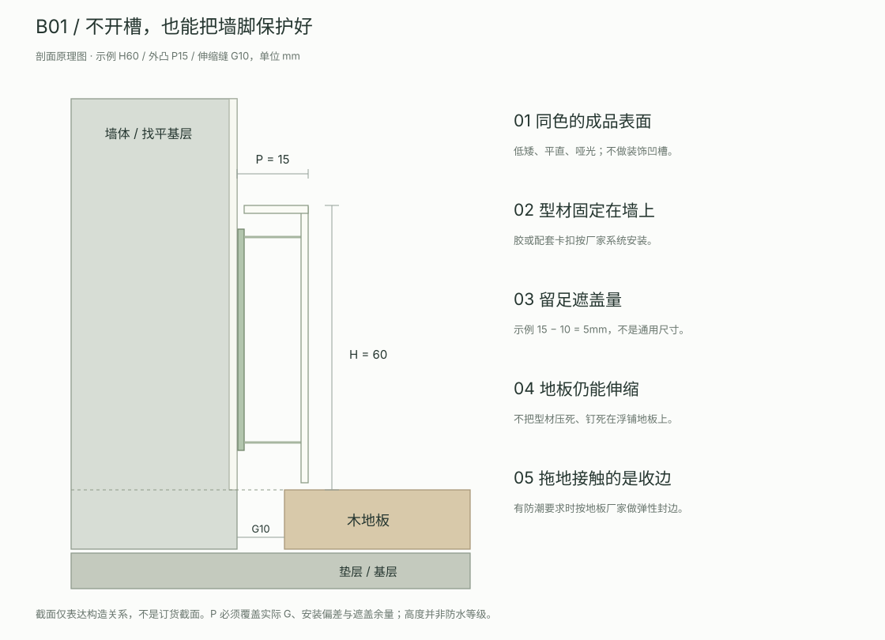
放大图纸 ↗把钱花在需要的工序上。
- 墙脚先平整、干燥
- 基层松动、起砂或不平，薄型收边容易显缝。先处理局部基层，再按型材厂家的胶粘或卡扣方式固定；不预先指定所有墙都能直接粘。
- 伸缩缝不硬填
- 不把踢脚线钉在或压死在浮铺地板上。防水型地材若要求背衬泡沫与弹性封边，按该系统完整做；不能用硬胶或水泥填死伸缩空间。
- 清洁范围说清楚
- 普通房间按地面材料要求微湿清洁，积水及时处理。卫生间淋浴等长期湿区另做墙地防水与收口，不能靠这条踢脚线解决。
订货清单同时问清：型材、内外角件、端帽、胶或卡扣、基层处理与安装人工。不要只比较单根材料价格。
材料与结构参考依据 ＋
06 / 看不见的体验QUIETLY WORKING.
少一点操心，
来自多一点预先考虑。
智能与设备的价值，是让生活稳定地运转。手动操作、检修路径和故障时的退路，同样属于设计。
LIGHT均匀明亮，局部可控。
采用多点照明补足工作面与走道，避免只有一盏主灯，也避免为了氛围把全屋做暗。夜间床边与路径照明独立控制。
AIR温度、噪声和空气一起考虑。
空调送风避开床头与长期坐姿，新风与排风分别解决具体问题。设备间的热与噪声不直接排向卧室。
POWER断网之后，基本功能仍能用。
灯光、门锁与窗帘保留合适的本地或手动操作。网络 UPS 与 NAS 安全关机分工，备用蜂窝也不承诺外部网络永远可用。
WATER用水方便，维护也方便。
直饮、制冰、洗烘和机器人水路集中规划。阀门、滤芯、排水与防漏措施保持可达，不藏在拆柜才能处理的位置。
扫地机器人，先给它一条能走的路。
- 通行
- 门槛、地毯边缘、落地线材与柜门一起检查。路线畅通比隐藏基站更重要。
- 进入
- 家具最低横撑与裙边决定实际净高。机器人机身高度、直径和越障能力按机型复核。
- 维护
- 尘袋、清洗盘、污水处理和故障拖出空间都要留。基站上方的柜板不能阻挡维护。
- 边界
- 不吸液体、热烟灰与危险杂物。淋浴区、露台与设备间不纳入此方案自动清扫。
07 / 把原则带回自己的房子MAKE IT YOURS.
不必复制这个户型。
可以借走它的思路。
01先写一天，再画一间房。
记录回家、吃饭、工作、洗衣和睡前的动作。把最常重复、最不愿意做的事圈出来，它们应该优先被设计解决。
02先确定常用物，再确定柜子。
量衣架、锅具、行李箱和常用设备。整理存量，再决定容量；不是先装满墙的柜，再寻找要放进去的东西。
03把预算给每天感受到的地方。
床与遮光、静音、洗烘、工作台、洗浴、网络和清洁设备优先。影音和智能配置按使用频率逐步增加。
04在施工之前，让假设变成实测。
实测墙柱门窗与管井，确认设备型号，复核通道、柜门和检修净空。结构、防水、电气与消防条件由专业人员深化。
关于这份参考设计与资料依据 ＋
这是面向独居生活的概念住宅研究，不是实际项目的施工图。约 98.3㎡ 室内净地面、1.8m 床垫、170cm 使用者身高与所有柜体尺寸均为本方案条件。尚未确定的设备品牌、型号、价格与工程条件不作确定承诺。
写实图由 AI 生成；为表达光线、材质和生活氛围，可能与尺寸图存在差异。矢量图由统一尺寸数据绘制，柜体分区名义高度仍需扣除板材、五金和安装占位；抽屉图标注的是内部分隔净尺寸。
设备要求参考 Roborock 自动上下水版安装说明、HP 打印机安装环境说明；室内吸烟相关说明参考 EPA 室内空气资料。具体安装以购买型号的最新版说明和现场条件为准。
YOUR PLACE. YOUR PACE.
回到这里，
就做自己。
一个人的世界。物品有位置，生活有余地。
回到开头 ↑{kind=link}
{kind=link}
{kind=link}
{kind=link}
{kind=link}
{kind=link}
{kind=link}
{kind=link}
{kind=link}
{kind=link}
{kind=link}
{kind=link}
{kind=link}
{kind=link}
{kind=link}
{kind=link}
{kind=link}
{kind=link}
{kind=link}
{kind=link}
{kind=link}
{kind=link}
{kind=link}
{kind=link}
{kind=link}
{kind=link}
{kind=link}